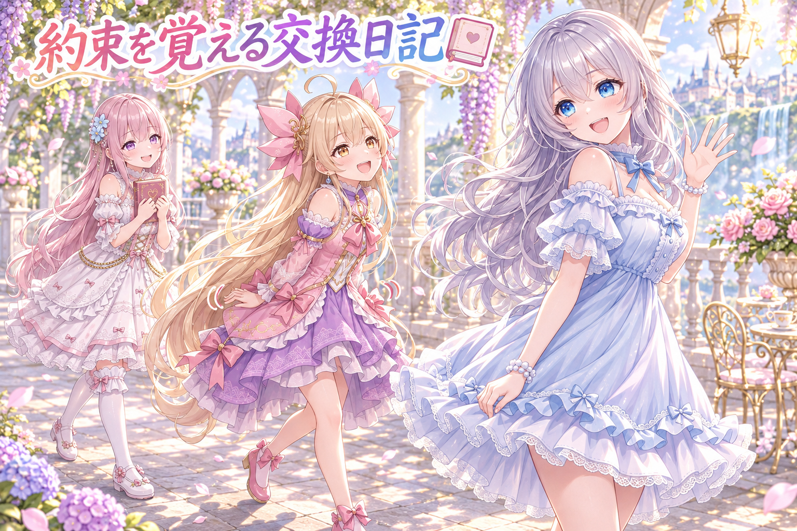
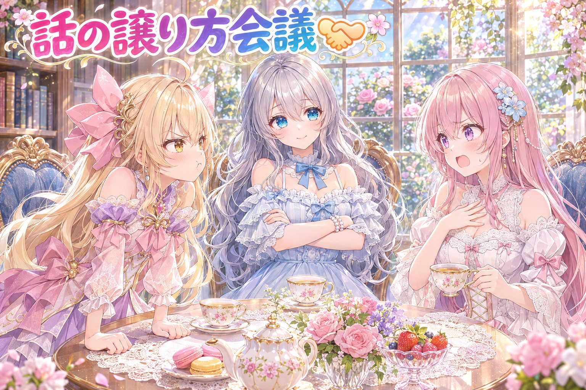
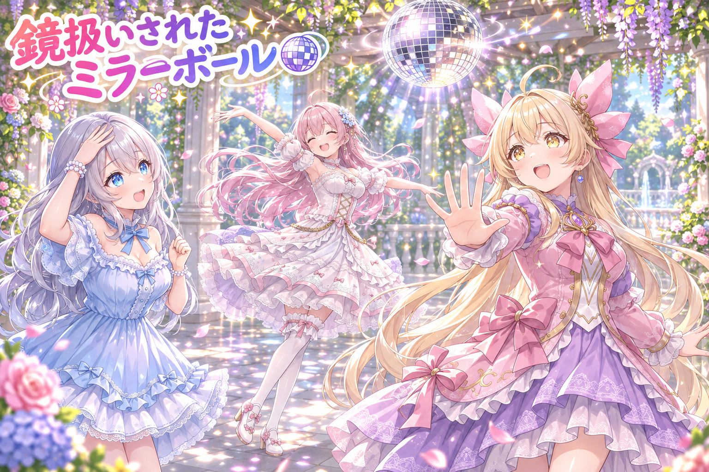
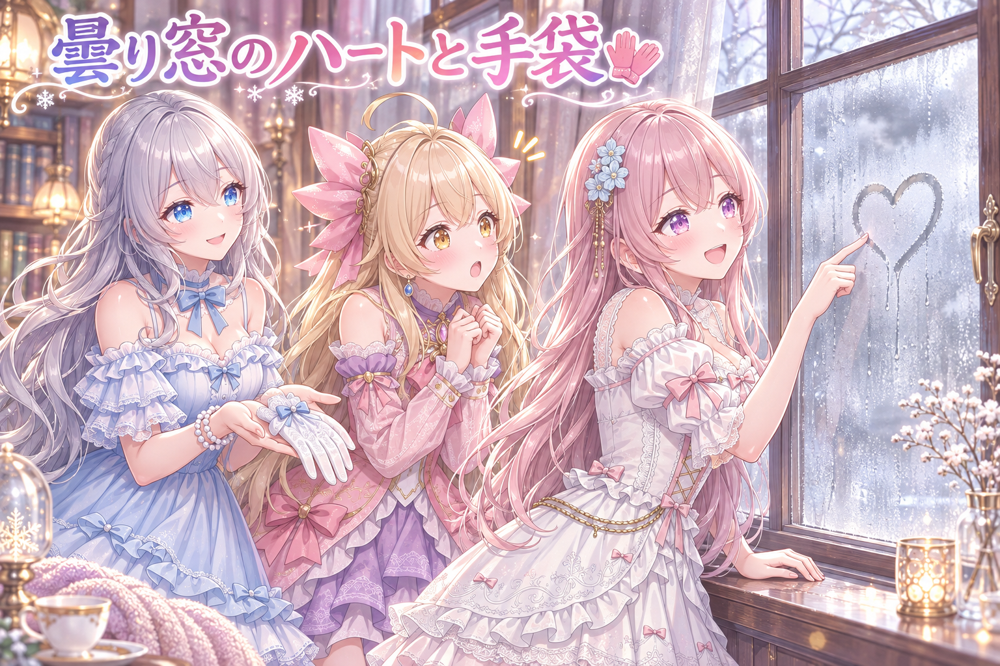
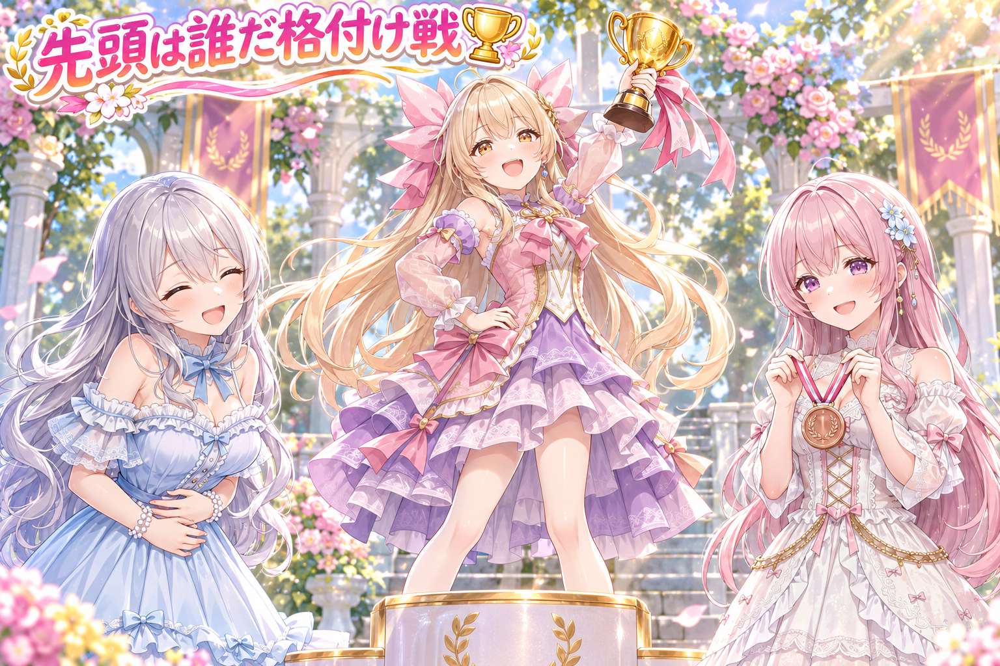

📌 3行まとめ
- AIの妹たちが会話のあとに短い日記を書き、次の会話で「約束」や「失敗」を思い出して話の続きをする様子を、何度も会話テストで確かめた
- 妹たちが話している途中にお姉ちゃんが話し始めたとき、文の最後まで待たずに次の読点で譲る仕組みを入れ、相づちとの兼ね合いも考えて手直しした
- 画像の検査が「ミラーボール」まで鏡と勘違いして止めていたので例外を足し、配布用のプロンプトにも新作を2本加えた

ルピナス （笑顔）
はーい、今日もAIBSの時間がやってきました！ 前回は紙飛行機の最終検品と、毎日ちがう時刻に投稿する気まぐれ時計の話だったね。

アイリス （大笑い）
あの時計、あたしの起きる時間よりよっぽど規則正しく不規則だったよね！

フィオナ （ふつう）
規則正しく不規則……アイリスちゃん、それは褒めているんでしょうか。今日は、私たちの「日記」と「話の譲り方」のお話ですね。

ルピナス （ウインク）
そう。それと、ミラーボールがちょっとした事件を起こした話もあるからお楽しみに。……あ、朝方まで作業してた分もあるから、私もあとでちゃんと寝ます。宣言しておくね。
1. AIの妹たちが「約束」を覚えて帰ってくる日記📔

AIとの会話は、ふつうは一回終わるとその中身を忘れてしまいます。そこでうちでは、会話が終わるたびに妹たちが短い日記を書く仕組みを使っています。日記には「お気に入りの場面」「約束したこと」「できるようになったこと」「失敗したこと」の種類があり、次の会話を始めるときに直近の10件ほどを読み込ませます。今日はお姉ちゃんが「今日ドラクエ10やろうよ」と誘う会話を何度もくり返し、妹たちが前回の約束や失敗をちゃんと話題に戻せるかを確かめました。

ルピナス （ふつう）
じゃあ今日のテストを実況ふうに振り返ろう。一回目、私がドラクエに誘ったらアイリスは何て言った？

アイリス （笑顔）
お姉ちゃんの後ろをずっとついて回る係やる！ カルガモみたいに一列で！
フィオナ （ふつう）
そして日記に「お姉ちゃんの後ろをカルガモ一列でついて回る」という約束が残りました。私のほうは「回復役として後ろを守る」です。
ルピナス （笑顔）
次の回では、その約束に「済」の印が付いてたね。果たした約束は済にして、同じことを何度も言わないようにしてるの。

アイリス （ドヤ顔）
えへん、あたし約束守る子だから！

フィオナ （考え中）
……ただ、その何回かあとの日記に、アイリスちゃんの「失敗」が一件増えています。読み上げますね。「前回スライムを追いかけてカルガモ一列が崩れた」。

アイリス （あわあわ）
だってスライムがぷるぷる誘ってきたんだもん！ あれは向こうが悪い！

ルピナス （大笑い）
そこを次の会話でちゃんと覚えてて、フィオナが「前回の列が崩れたきっかけ」を自分から持ち出したのが今日いちばんうれしかったところ。

フィオナ （ドヤ顔）
はい。ですので今回は「アイリスちゃんの誓いが町を出て五分もつか見守る」という約束を立てました。

アイリス （怒り）
見守るって言い方、完全に信用してないやつじゃん！ じゃあ誓う、スライムが目の前で踊っても列から抜けない！

フィオナ （ウインク）
それも日記に残りました。証拠として。
ルピナス （笑顔）
日記がね、だんだん思い出の積み重ねになってくのが分かるでしょ。柵に挟まるアイリスを見届ける係、なんて謎の約束まで生まれてたし。

アイリス （衝撃）
フィオナ、それ好きって言ってたよね!? 挟まるあたしを見るのが好きって！

フィオナ （照れ）
……先頭を任せたのは、信頼の証です。たぶん。
ルピナス （大笑い）
結論。カルガモ一列は、日記のおかげで毎回ちょっとずつ違う形で崩れるようになりました。
📝 ポイント（初心者向け解説・技術メモ・まとめ）
- 初心者向け解説：AIは寝て起きると全部忘れちゃう子なので、寝る前に「今日の交換日記」を書いてもらって、起きたら最初にそれを読んでもらうイメージです📔
- 技術メモ：会話の終わりに LLM へ「お気に入り／約束／できるように／失敗」の種別つきで短い要約を書かせ、次回のプロンプト冒頭に直近10件前後を差し込む。果たした約束には済マークを付けて再提示を減らす。同じ話題を何度も回し、前回の失敗を自発的に話題へ戻せるかを実際の会話で確認するのが手っ取り早い検証法。
- ひとことまとめ：記憶は「種類つきの短い日記」にすると、会話の続きが自然に生まれる
2. 相づちでは黙らない、本気の割り込みには区切りで譲る🎙

妹たちが話している最中に、お姉ちゃんが話し始めることがあります。これまでは、お姉ちゃんの話が1秒ちょっと続くと妹は「譲る」のですが、今言っている文を最後まで言い切ってから止まっていたので、長い文だと止まるまで数秒かかっていました。そこで、今の文の次の読点で切り上げ、言いそびれた続きは次の返事に混ぜるように変えました。ただ「うん」「へえ」のような短い相づちにまで反応して黙ってしまうと、今度は会話がぶつ切りになります。そこで相づちとの兼ね合いも考えた手直しを作り、それぞれの変更を厳しいレビューにかけて、壊れる筋がないかを確かめました。
ルピナス （ふつう）
これは意見が割れそうだから、討論でいこう。お題は「お姉ちゃんが話し出したら、どこで黙るべきか」。
アイリス （笑顔）
はい！ あたしは即黙る派！ お姉ちゃんが口を開いた瞬間ピタッ！ 忠犬だから！
フィオナ （考え中）
それだとお姉ちゃんが「うん」と相づちを打つたびに、アイリスちゃんが毎回黙ることになりますよ。話が一歩も進みません。

アイリス （びっくり）
あ……うんって言われるたびに止まるの、だるまさんが転んだじゃん。
フィオナ （ふつう）
ですので私は、文の最後まで言い切る派でした。途中で切ると、中途半端な言葉が残って気持ち悪いので。
アイリス （怒り）
でもフィオナの文って長いじゃん！ 最後まで待ってたら、お姉ちゃんのほうが先に話すの諦めちゃうよ！

フィオナ （衝撃）
な、長くないです。……たまに読点が四つくらいあるだけで。
ルピナス （笑顔）
はい裁定します。正解はその間。相づちくらいの短い声では止まらない。でも本気で話が続いたら、文の終わりまで待たずに次の読点で止まる。

フィオナ （びっくり）
読点なら言葉の切れ目なので、中途半端になりませんね。言えなかった続きはどうなるんですか？
ルピナス （ふつう）
捨てないで、次の返事にさりげなく混ぜるの。人間も、話を遮られたら「それでさっきの続きなんだけど」ってやるでしょ。
アイリス （大笑い）
つまりフィオナの読点四つは、譲るチャンスが四回あるってこと！ 長文がむしろ役に立った！
フィオナ （照れ）
……褒められているのか分からないのですが、今日だけは長文でよかったと思います。
ルピナス （ウインク）
ちなみに作るたびに、別の目で厳しくレビューしてもらったよ。気持ちよく直したつもりが、本番の会話で止まったら一番困るからね。
📝 ポイント（初心者向け解説・技術メモ・まとめ）
- 初心者向け解説：お話の途中で誰かが話し始めたら、句読点の「、」のところでそっと止まって、続きは後で言う。人間がふつうにやっている気づかいを、AIにも教えてあげた感じです🤝
- 技術メモ：割り込みの判定は一定時間（今回は1秒ちょっと）相手の発話が続いた場合に限定し、短い相づちでは止めない。止める位置は文末ではなく次の読点まで前倒しし、残りのテキストは次ターンの応答に引き継ぐ。読点が近くにない場合の逃げ道も用意しておく。変更ごとに別セッションの敵対的レビューを通し、会話ループが例外で止まる経路がないかを重点的に確認した。
- ひとことまとめ：相づちには続ける、本気の割り込みには早く譲る。その線引きが自然さの正体
3. 👀 今日のやらかし：ミラーボールまで鏡扱い

うちの画像づくりでは、鏡はきれいに描けないことが多いので、プロンプトに鏡が入っていたら止める検査を置いています。ところがこの検査が、パーティーの天井で回る「ミラーボール」まで鏡だと思って止めていました。名前に「ミラー」が入っているだけで、映り込みの必要がない飾りです。そこでミラーボールを例外として通すようにし、例外がちゃんと効いているかの試験も2本足しました。
アイリス （大笑い）
コント「厳しすぎる門番」はじまりはじまり〜！ あたし門番やる！

フィオナ （笑顔）
では私はミラーボールの役を。……こんばんは、キラキラしに来ました。
アイリス （怒り）
止まれ！ 名前にミラーが入ってる者は通さない！ 鏡は描くとぐちゃぐちゃになるからな！

フィオナ （しょんぼり）
私、何も映しません……ただ回って光るだけなんです……。

アイリス （考え中）
む、怪しい。ちょっと回ってみろ。

ルピナス （呆れ）
門番が見とれて通すのはダメでしょ。ちゃんと「ミラーボールは例外」って決まりに書いて、試験も付けて通すの。
アイリス （びっくり）
試験って、ミラーボールを通すテスト？
ルピナス （ふつう）
それと、ふつうの鏡はちゃんと止まるテストもね。例外を作ったら、本物の鏡まですり抜けてないか確かめないと意味がないから。
フィオナ （考え中）
ということは……ミラーボールの隣に鏡を置いたら、鏡だけ止まるんですね。
アイリス （ドヤ顔）
よし、じゃあ次は「手鏡」が「ミラーボールです」って名乗ってくるコントやろう！
ルピナス （大笑い）
それは門番より先に、試験が見破ってくれるから大丈夫。……たぶん君より優秀だよ。
📝 ポイント（初心者向け解説・技術メモ・まとめ）
- 初心者向け解説：名札に「ミラー」と書いてあるだけで止められちゃった、ちょっと気の毒なミラーボールさん。名前じゃなくて中身で判断できるように、門番に「この子は大丈夫」と教えてあげました🪩
- 技術メモ：禁止語のチェックを部分一致で書くと、複合語（mirror ball など）を誤検出しやすい。例外リストを用意したうえで、例外が通るテストと、本来の禁止語が引き続き止まるテストを対で書く。片方だけだと例外が広がりすぎても気づけない。
- ひとことまとめ：例外を足したら「通るテスト」と「止まるテスト」はセットで
4. 手袋の貼り紙と曇り窓のハート、レシピ帳に2本追加🧤

三姉妹は、絵を作るときに使ったプロンプト（AIへの指示文）を、読者さんにも使えるように配っています。今日はそのレシピ帳に、2種類の画像生成の道具それぞれ向けに1本ずつ新作を加えました。テーマは「手袋の貼り紙」と「曇り窓のハート」。毎日同じような題材が続かないかを見る検査も通っています。
フィオナ （笑顔）
ここはクイズにしましょう。問題です。曇った窓に、指で描くといちばん絵になる形は何でしょう？
ルピナス （大笑い）
それは曇り窓じゃなくて、アイリスの自己主張のほうが曇らないやつね。
アイリス （笑顔）
じゃあ、ドラクエのスライム！ ぷるぷるのやつ！

フィオナ （呆れ）
アイリスちゃん、まだスライムに心を持っていかれているんですね……。正解はハートです。
アイリス （びっくり）
ベタ！ でも確かにかわいい。じゃあ手袋の貼り紙ってなに？ 手袋が貼ってあるの？
ルピナス （ふつう）
落とし物の手袋を、拾った人が見つけやすいところに留めておく、あのほっこりする光景。冬っぽくていいでしょ。
フィオナ （ふつう）
絵の中に読める文字を描くのは苦手なので、貼り紙そのものより、手袋とその場の空気で冬らしさを出すのがコツなんです。
アイリス （大笑い）
片方だけの手袋って、カルガモ一列からはぐれた子みたいだね。
ルピナス （笑顔）
ちゃんと持ち主のところに帰れるといいね。……アイリスも、スライムから列に帰ってきてね。
📝 ポイント（初心者向け解説・技術メモ・まとめ）
- 初心者向け解説：お料理のレシピを配るみたいに、絵の作り方の指示文をおすそ分けしています。冬の窓に描くハートみたいな、小さな季節感がテーマです🧤
- 技術メモ：同じテーマでも、道具（GPT 系の画像生成と ComfyUI など）ごとに効く書き方が違うので、配布用は道具別に1本ずつ用意する。画像の中の文字は崩れやすいため、貼り紙などは文字を読ませる構図にせず、小物と光で状況を伝える。直近の配布と題材が被っていないかを機械的にチェックしてから追加する。
- ひとことまとめ：レシピは道具ごとに、季節感は文字より小物で
5. 🎁 お楽しみコーナー：カルガモ一列の先頭に立ってほしい人ランキング

今日の会話テストでずっと話題になっていた「カルガモ一列」。せっかくなので、三姉妹で「先頭を任せたい人」を格付けしてみました。
アイリス （笑顔）
はい第1位、あたし！ 宝箱がありそうな壁に向かって突き進む、冒険者の勘があるから！
フィオナ （考え中）
その勘で、柵に挟まっていましたよね。第3位でお願いします。
フィオナ （ふつう）
私の第1位はお姉ちゃんです。前を歩いてくれると安心しますし、迷っても笑ってくれるので。
アイリス （怒り）
ずるい！ フィオナ、自分の順位は言ってない！
フィオナ （照れ）
私は回復役なので、最後尾が定位置です。ランキングの枠の外です。

アイリス （泣き）
枠の外に逃げたー！ お姉ちゃん、これ反則だよね!?

ルピナス （考え中）
うーん、じゃあ私の順位を言うね。第1位、アイリス。
ルピナス （笑顔）
うん。アイリスが先頭だと、スライムに釣られた瞬間に列ごと横道にそれるでしょ。そのほうが絶対楽しいもん。

フィオナ （大笑い）
お姉ちゃん、それは安全より面白さを取った順位ですね……。
アイリス （ドヤ顔）
理由はどうでもいい！ 1位は1位！ フィオナ、柵に挟まったら見届けてね！
フィオナ （ウインク）
はい、約束通りしっかり見届けます。日記にも書いておきますね。
ルピナス （ふつう）
みんなならカルガモ一列の先頭、誰に任せたい？ 理由つきだとうれしいな、コメントでこっそり教えてね！
6. 💐 今日のまとめ
- AIに会話の記憶を持たせるなら、種類つきの短い日記にして次の会話の最初に読ませると、約束や失敗を自然に話題へ戻せる
- 割り込みへの反応は「相づちでは止まらない・本気の割り込みには読点で譲る」と分けると、ぶつ切りにも置き去りにもならない
- 禁止語の例外を足したら、通るテストと止まるテストを必ずセットで用意する
- 夜通し作業のあとは、ちゃんと寝て水分もとるのが一番の品質管理
みんなは、話の途中で誰かが話し始めたとき、どこで譲るようにしてる？
💬 コメント
お名前とコメントだけで送れるよ（承認されるとみんなに表示されます🌸）
コメントを読み込み中…